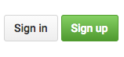

Using GitHub as a publishing tool helps us do a few things:
Sign up at GitHub.com
Use an email you can check, you will have to confirm your email.
We are going to start with the GitHub Desktop client to learn the basics of git and Github.
Download the GitHub Desktop Client here.
The lab computers may have an older version that looks a bit different but they have most of the same functionality.
Follow the steps to login to your account:


Once logged in, use the + button in the upper left to add a new repo.
Repo is short for code repository.
Select your mmp210 folder.
Since this is our first update to the git repository all of our files are green meaning they're new changes to be added.
Write a commit message and then click the commit to master button.
Once your first commit is made, you can click the
After the first commit, new changes or additions to your folder will show in the Github Desktop window. When you are done with a new assignment or project, you will write a new commit message and use the
This process takes the place of the FTP client that was used in MMP 100. This is a more effective way to publish a website because it tracks all of our changes. Just like you have previously done with FTP and Filezilla, you can use GitHub Desktop on your home computer and when you sign in you will be able to create a copy or clone of your project on any computer. You can then upload and download your changes without worrying about losing any work.
We're going to use GitHub Pages to publish the repo.
Return to GitHub.com in your browser. You will see the new repo. You can click on it to see your files and administer the repo.
Navigate to the Settings tab on the GitHub repo page and scroll down to the to the GitHub Pages section. Click the dropdown under
Your website will be published at the URL <username>.github.io/<reponame> where your username is you GitHub acount and the repo name is whatever you named your repository.